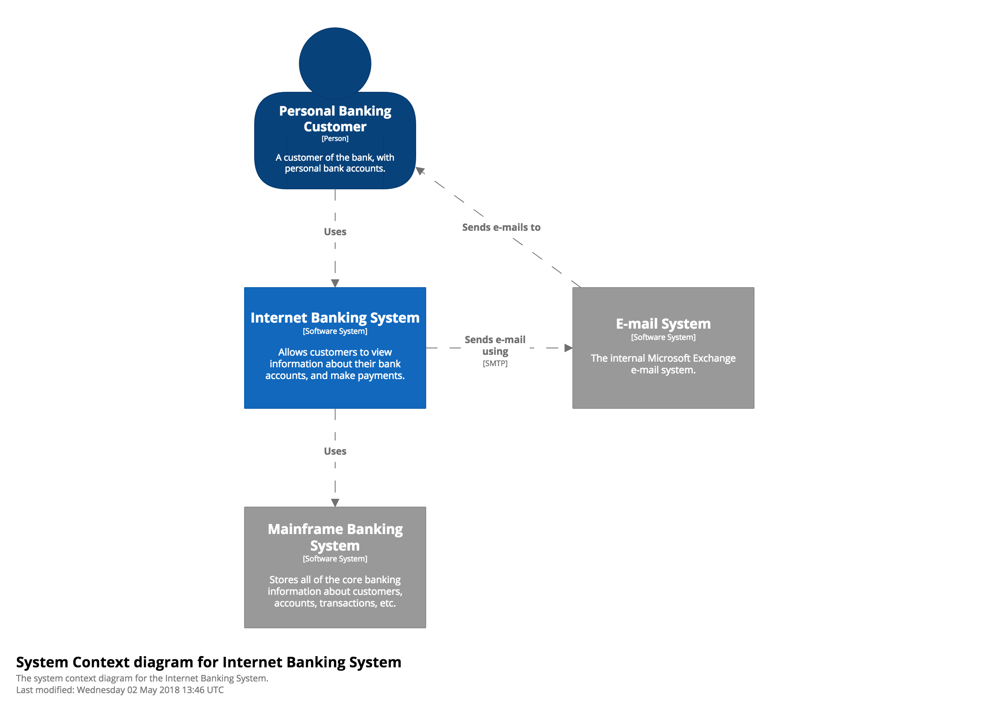
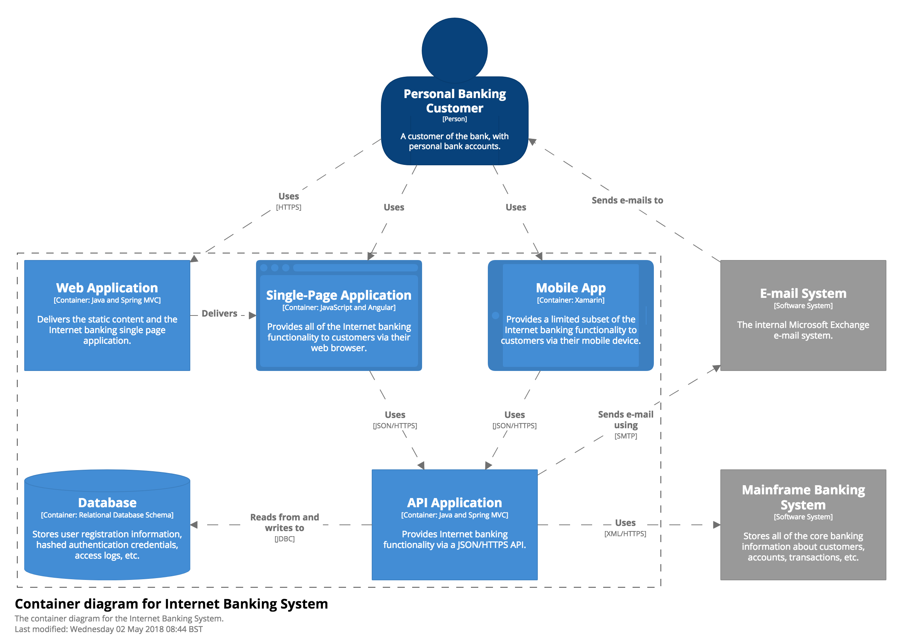
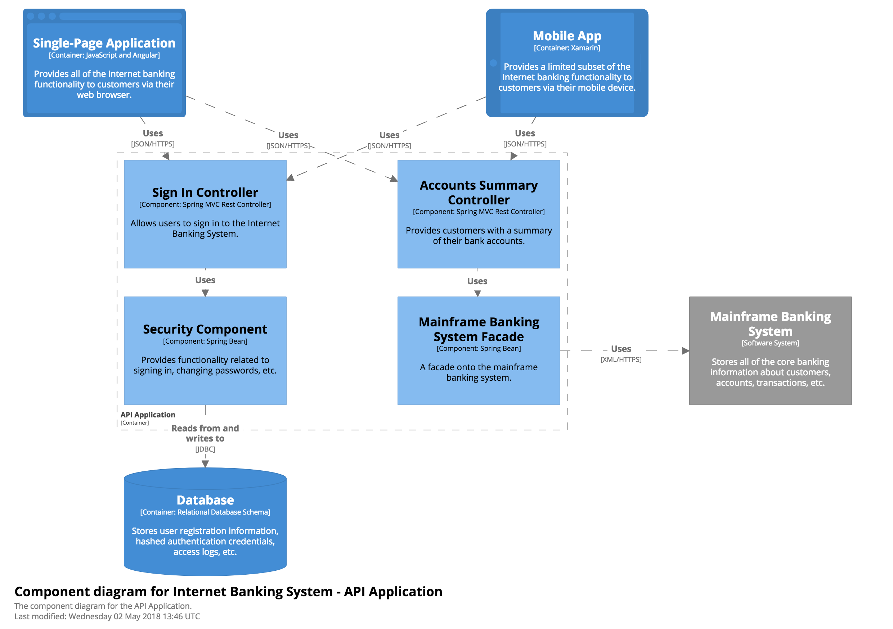
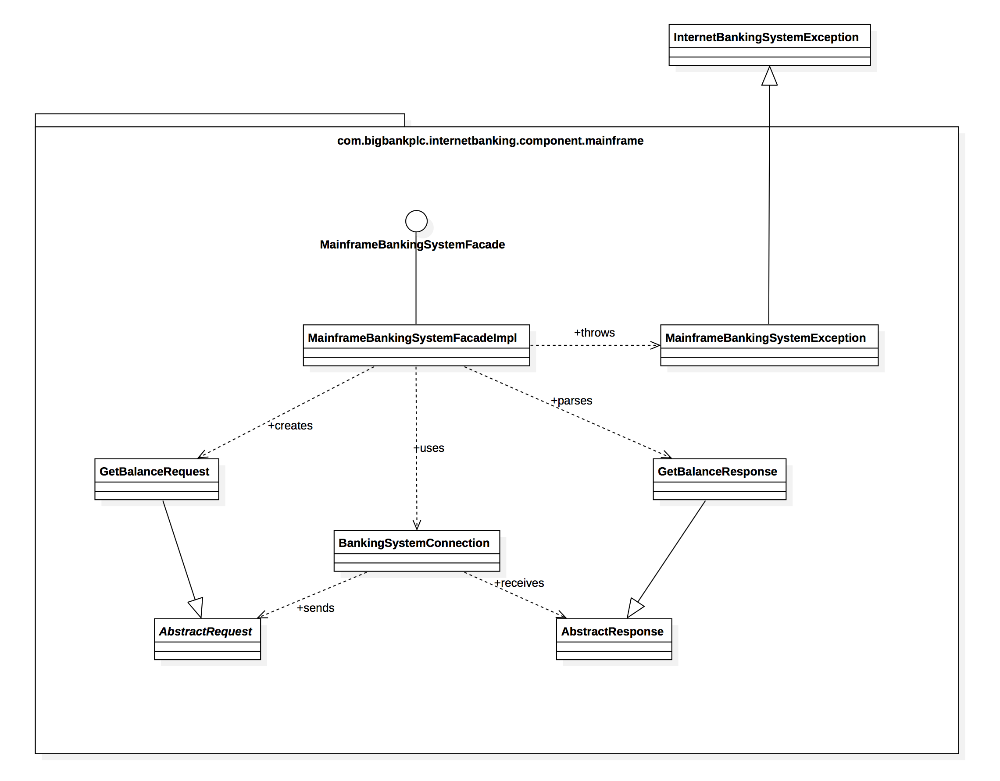

The C4 model for visualising software architecture
Context, Containers, Components and Code
In a hurry? Read the 5 minute introduction to the C4 model at InfoQ
The C4 model for software architecture
O modelo C4 de documentação para Arquitetura de Software
用于软件架构的C4模型
ソフトウェアアーキテクチャのためのC4モデル
Or watch "Visualising software architecture with the C4 model"
Introduction
Ask somebody in the building industry to visually communicate the architecture of a building and you'll be presented with site plans, floor plans, elevation views, cross-section views and detail drawings. In contrast, ask a software developer to communicate the software architecture of a software system using diagrams and you'll likely get a confused mess of boxes and lines ... inconsistent notation (colour coding, shapes, line styles, etc), ambiguous naming, unlabelled relationships, generic terminology, missing technology choices, mixed abstractions, etc.


As an industry, we do have the Unified Modeling Language (UML), ArchiMate and SysML, but asking whether these provide an effective way to communicate software architecture is often irrelevant because many teams have already thrown them out in favour of much simpler "boxes and lines" diagrams. Abandoning these modelling languages is one thing but, perhaps in the race for agility, many software development teams have lost the ability to communicate visually.
Maps of your code
The C4 model was created as a way to help software development teams describe and communicate software architecture, both during up-front design sessions and when retrospectively documenting an existing codebase. It's a way to create maps of your code, at various levels of detail, in the same way you would use something like Google Maps to zoom in and out of an area you are interested in.

Like source code, Google Street View provides a very low-level and accurate view of a location.

Navigating an unfamiliar environment becomes easier if you zoom out though.

Zooming out further will provide additional context you might not have been aware of.

Different levels of zoom allow you to tell different stories to different audiences.
Although primarily aimed at software architects and developers, the C4 model provides a way for software development teams to efficiently and effectively communicate their software architecture, at different levels of detail, telling different stories to different types of audience, when doing up front design or retrospectively documenting an existing codebase.

Level 1: A System Context diagram provides a starting point, showing how the software system in scope fits into the world around it.

Level 2: A Container diagram zooms into the software system in scope, showing the high-level technical building blocks.

Level 3: A Component diagram zooms into an individual container, showing the components inside it.

Level 4: A code (e.g. UML class) diagram can be used to zoom into an individual component, showing how that component is implemented.

Different levels of zoom allow you to tell different stories to different audiences.
The C4 model is an "abstraction-first" approach to diagramming software architecture, based upon abstractions that reflect how software architects and developers think about and build software. The small set of abstractions and diagram types makes the C4 model easy to learn and use.
Abstractions
In order to create these maps of your code, we first need a common set of abstractions to create a ubiquitous language that we can use to describe the static structure of a software system. The C4 model considers the static structures of a software system in terms of containers, components and code. And people use the software systems that we build.

A software system is made up of one or more containers (web applications, mobile apps, desktop applications, databases, file systems, etc), each of which contains one or more components, which in turn are implemented by one or more code elements (e.g. classes, interfaces, objects, functions, etc).
{kind=link}
A visualisation of an example software architecture model, showing the hierarchical nature of the elements that make up the static structure.
Person
A person represents one of the human users of your software system (e.g. actors, roles, personas, etc).
Software System
A software system is the highest level of abstraction and describes something that delivers value to its users, whether they are human or not. This includes the software system you are modelling, and the other software systems upon which your software system depends (or vice versa). In many cases, a software system is "owned by" a single software development team.
Container
Not Docker! In the C4 model, a container represents an application or a data store. A container is something that needs to be running in order for the overall software system to work. In real terms, a container is something like:
- Server-side web application: A Java EE web application running on Apache Tomcat, an ASP.NET MVC application running on Microsoft IIS, a Ruby on Rails application running on WEBrick, a Node.js application, etc.
- Client-side web application: A JavaScript application running in a web browser using Angular, Backbone.JS, jQuery, etc.
- Client-side desktop application: A Windows desktop application written using WPF, an OS X desktop application written using Objective-C, a cross-platform desktop application written using JavaFX, etc.
- Mobile app: An Apple iOS app, an Android app, a Microsoft Windows Phone app, etc.
- Server-side console application: A standalone (e.g. "public static void main") application, a batch process, etc.
- Microservice: A single microservice, hosted in anything from a traditional web server to something like Spring Boot, Dropwizard, etc.
- Serverless function: A single serverless function (e.g. Amazon Lambda, Azure Function, etc).
- Database: A schema or database in a relational database management system, document store, graph database, etc such as MySQL, Microsoft SQL Server, Oracle Database, MongoDB, Riak, Cassandra, Neo4j, etc.
- Blob or content store: A blob store (e.g. Amazon S3, Microsoft Azure Blob Storage, etc) or content delivery network (e.g. Akamai, Amazon CloudFront, etc).
- File system: A full local file system or a portion of a larger networked file system (e.g. SAN, NAS, etc).
- Shell script: A single shell script written in Bash, etc.
- etc
A container is essentially a context or boundary inside which some code is executed or some data is stored. And each container is a separately deployable/runnable thing or runtime environment, typically (but not always) running in its own process space. Because of this, communication between containers typically takes the form of an inter-process communication.
Component
The word "component" is a hugely overloaded term in the software development industry, but in this context a component is a grouping of related functionality encapsulated behind a well-defined interface. If you're using a language like Java or C#, the simplest way to think of a component is that it's a collection of implementation classes behind an interface. Aspects such as how those components are packaged (e.g. one component vs many components per JAR file, DLL, shared library, etc) is a separate and orthogonal concern.
An important point to note here is that all components inside a container typically execute in the same process space. In the C4 model, components are not separately deployable units.
Core diagrams
Visualising this hierarchy of abstractions is then done by creating a collection of Context, Container, Component and (optionally) Code (e.g. UML class) diagrams. This is where the C4 model gets its name from.
{kind=link}
Level 1: System Context diagram 
A System Context diagram is a good starting point for diagramming and documenting a software system, allowing you to step back and see the big picture. Draw a diagram showing your system as a box in the centre, surrounded by its users and the other systems that it interacts with.
Detail isn't important here as this is your zoomed out view showing a big picture of the system landscape. The focus should be on people (actors, roles, personas, etc) and software systems rather than technologies, protocols and other low-level details. It's the sort of diagram that you could show to non-technical people.
Scope: A single software system.
Primary elements: The software system in scope.
Supporting elements: People (e.g. users, actors, roles, or personas) and software systems (external dependencies) that are directly connected to the software system in scope. Typically these other software systems sit outside the scope or boundary of your own software system, and you don’t have responsibility or ownership of them.
Intended audience: Everybody, both technical and non-technical people, inside and outside of the software development team.
{kind=link}
Level 2: Container diagram
Once you understand how your system fits in to the overall IT environment, a really useful next step is to zoom-in to the system boundary with a Container diagram. A "container" is something like a server-side web application, single-page application, desktop application, mobile app, database schema, file system, etc. Essentially, a container is a separately runnable/deployable unit (e.g. a separate process space) that executes code or stores data.
The Container diagram shows the high-level shape of the software architecture and how responsibilities are distributed across it. It also shows the major technology choices and how the containers communicate with one another. It's a simple, high-level technology focussed diagram that is useful for software developers and support/operations staff alike.
Scope: A single software system.
Primary elements: Containers within the software system in scope.
Supporting elements: People and software systems directly connected to the containers.
Intended audience: Technical people inside and outside of the software development team; including software architects, developers and operations/support staff.
Notes: This diagram says nothing about deployment scenarios, clustering, replication, failover, etc.
{kind=link}
Level 3: Component diagram
Next you can zoom in and decompose each container further to identify the major structural building blocks and their interactions.
The Component diagram shows how a container is made up of a number of "components", what each of those components are, their responsibilities and the technology/implementation details.
Scope: A single container.
Primary elements: Components within the container in scope.
Supporting elements: Containers (within the software system in scope) plus people and software systems directly connected to the components.
Intended audience: Software architects and developers.
{kind=link}
Level 4: Code
Finally, you can zoom in to each component to show how it is implemented as code; using UML class diagrams, entity relationship diagrams or similar.
This is an optional level of detail and is often available on-demand from tooling such as IDEs. Ideally this diagram would be automatically generated using tooling (e.g. an IDE or UML modelling tool), and you should consider showing only those attributes and methods that allow you to tell the story that you want to tell. This level of detail is not recommended for anything but the most important or complex components.
Scope: A single component.
Primary elements: Code elements (e.g. classes, interfaces, objects, functions, database tables, etc) within the component in scope.
Intended audience: Software architects and developers.
Supplementary diagrams
Once you have a good understanding of the static structure, you can supplement the C4 diagrams to show other aspects.
{kind=link}
System Landscape diagram
The C4 model provides a static view of a single software system but, in the real-world, software systems never live in isolation. For this reason, and particularly if you are responsible for a collection of software systems, it's often useful to understand how all of these software systems fit together within the bounds of an enterprise. To do this, simply add another diagram that sits "on top" of the C4 diagrams, to show the system landscape from an IT perspective. Like the System Context diagram, this diagram can show the organisational boundary, internal/external users and internal/external systems.
Essentially this is a high-level map of the software systems at the enterprise level, with a C4 drill-down for each software system of interest. From a practical perspective, a system landscape diagram is really just a system context diagram without a specific focus on a particular software system.
Scope: An enterprise.
Primary elements: People and software systems related to the enterprise in scope.
Intended audience: Technical and non-technical people, inside and outside of the software development team.
{kind=link}
Dynamic diagram
A dynamic diagram can be useful when you want to show how elements in a static model collaborate at runtime to implement a user story, use case, feature, etc. This dynamic diagram is based upon a UML communication diagram (previously known as a "UML collaboration diagram"). It is similar to a UML sequence diagram although it allows a free-form arrangement of diagram elements with numbered interactions to indicate ordering.
Scope: An enterprise, software system or container.
Primary and supporting elements: Depends on the diagram scope; enterprise (see System Landscape diagram), software system (see System Context or Container diagrams), container (see Component diagram).
Intended audience: Technical and non-technical people, inside and outside of the software development team.
{kind=link}
Deployment diagram
A deployment diagram allows you to illustrate how containers in the static model are mapped to infrastructure. This deployment diagram is based upon a UML deployment diagram, although simplified slightly to show the mapping between containers and deployment nodes. A deployment node is something like physical infrastructure (e.g. a physical server or device), virtualised infrastructure (e.g. IaaS, PaaS, a virtual machine), containerised infrastructure (e.g. a Docker container), an execution environment (e.g. a database server, Java EE web/application server, Microsoft IIS), etc. Deployment nodes can be nested.
You may also want to include infrastructure nodes such as DNS services, load balancers, firewalls, etc.
Scope: A single software system.
Primary elements: Deployment nodes and containers within the software system in scope.
Supporting elements: Infrastructure nodes used in the deployment of the software system.
Intended audience: Technical people inside and outside of the software development team; including software architects, developers, infrastructure architects, and operations/support staff.
Notation
The C4 model doesn't prescribe any particular notation. A simple notation that works well on whiteboards, paper, sticky notes, index cards and a variety of diagraming tools is as follows.

Person

Software System

Container

Component

Relationship
You can then use colour and shapes to supplement the diagram, either to add additional information or simply to make the diagram more aesthetically pleasing.
C4 and UML
Although the example diagrams above are created using a "boxes and lines" notation, the core diagrams can be illustrated using UML with the appropriate use of packages, components and stereotypes. The resulting UML diagrams do tend to lack the same degree of descriptive text though, because adding such text isn't possible (or easy) with some UML tools.
Here are three examples of a System Context, Container and Component diagram for comparison.


C4 and ArchiMate
See C4 Model, Architecture Viewpoint and Archi 4.7 for details of how to create C4 model diagrams with ArchiMate.
Diagram key/legend
Any notation used should be as self-describing as possible, but all diagrams should have a key/legend to make the notation explicit. This applies to diagrams created with notations such as UML, ArchiMate and SysML too, as not everybody will know the notation being used.
{kind=link}
Notation, notation, notation
Although the C4 model is an abstraction-first approach and notation independent, you still need to ensure that your diagram notation makes sense, and that the diagrams are comprehensible. A good way to think about this is to ask yourself whether each diagram can stand alone, and be (mostly) understood without a narrative. You can use this short software architecture diagram review checklist to help.
And here are some recommendations related to notation.
Diagrams
- Every diagram should have a title describing the diagram type and scope (e.g. "System Context diagram for My Software System").
- Every diagram should have a key/legend explaining the notation being used (e.g. shapes, colours, border styles, line types, arrow heads, etc).
- Acronyms and abbreviations (business/domain or technology) should be understandable by all audiences, or explained in the diagram key/legend.
Elements
- The type of every element should be explicitly specified (e.g. Person, Software System, Container or Component).
- Every element should have a short description, to provide an "at a glance" view of key responsibilities.
- Every container and component should have a technology explicitly specified.
Relationships
- Every line should represent a unidirectional relationship.
- Every line should be labelled, the label being consistent with the direction and intent of the relationship (e.g. dependency or data flow). Try to be as specific as possible with the label, ideally avoiding single words like, "Uses".
- Relationships between containers (typically these represent inter-process communication) should have a technology/protocol explicitly labelled.
Examples
Here are some collections of example software architecture diagrams based upon the C4 model.
Big Bank plc
(System Landscape, System Context, Container, Component, Dynamic and Deployment)
Financial Risk System
(System Context)
Spring PetClinic
(System Context, Container, Component, Dynamic and Deployment)
Message bus and microservices
(Container and Dynamic)
Widgets Limited
(System Landscape, System Context and Dynamic)
Contoso University
(System Context, Container, Component and Dynamic)
Frequently asked questions
What's the background behind the C4 model?
The C4 model was created by Simon Brown, who started teaching people about software architecture, while working as a software developer/architect in London. Part of Simon's training course was a design exercise, where groups of people were given some requirements, asked to do some design, and to draw some diagrams to express that design.
Although this was a design focussed exercise, the wide variety of diagrams made it evident that the visualisation of ideas was a skill that most people sorely lacked. The C4 model is essentially a formalisation of how Simon used to visualise software architecture, which has evolved over the years.
What's the inspiration behind the C4 model?
The C4 model was inspired by the Unified Modeling Language and the 4+1 model for software architecture. In summary, you can think of the C4 model as a simplified version of the underlying concepts, designed to (1) make it easier for software developers to describe and understand how a software system works and (2) to minimise the gap between the software architecture model/description and the source code.
The roots of the C4 model, and the various diagram types within it, can be traced back to somewhere in the region of 2006, although the "C4" name came much later, around the end of 2011. It was created during a time where teams, influenced by the agile movement, were less than enthusiastic about using UML.
Isn't the C4 model a step backwards? Why are you reinventing UML? Why not just use UML?
Whether you see the C4 model as a step forwards or a step backwards depends upon where you are. If you're using UML (or SysML, ArchiMate, etc) and it's working for you, stick with it. Unfortunately, UML usage seems to be in decline, and many teams have reverted to using ad hoc boxes and lines diagrams once again. Given that many of those teams don't want to use UML (for various reasons), the C4 model helps introduce some structure and discipline into the way software architecture is communicated. For many teams, the C4 model is sufficient. And for others, perhaps it's a stepping stone to UML.
How many people use the C4 model?
The honest answer is that nobody knows. Simon has personally taught the C4 model to somewhere over 10,000 people in more than 30 countries; with conference talks, videos, books and articles reaching many more than this. Other people are also teaching, speaking and writing about the C4 model too. It's definitely being used though, in organisations ranging from startups to global household names.
Why "container"?
Terms like "process", "application", "app", "server", "deployable unit", etc all have associated implications, so the name "container" was chosen as a generic way to describe something in which components live. From one perspective, it's unfortunate that containerisation has become popular, because many software developers now associate the term "container" with Docker. From another perspective though, there is sometimes a nice parity between a container in the C4 model and an infrastructure (e.g. Docker) container.
While many teams successfully use the C4 model as is, feel free to change the terminology if needed.
Can we change the terminology?
This terminology (context, containers, components and code) works for many organisations and many types of software. However, sometimes an organisation will have an existing terminology that people are already familiar with. Or perhaps "components" and "classes" don't easily map on to the technology being used (e.g. functional languages often use the terms "module" and "function").
Feel free to modify the terminology that you use to describe software architecture at different levels of abstraction. Just make sure that everybody explicitly understands it.
How do you model microservices and serverless?
Broadly speaking, there are two options for diagramming microservices when using the C4 model.
- Microservices as software systems: If your software system has a dependency upon a number of microservices that are outside of your control (e.g. they are owned and/or operated by a separate team), model these microservices as external software systems that you can't see inside of.
- Microservices as containers: On the other hand, if the microservices are a part of a software system that you are building (i.e. you own them), model them as containers, along with any data stores that those microservices use. In the same way that a modular monolithic application is a container with a number of components running inside it, a microservice is simply a container with a (smaller) number of components running inside it.
The same is true for serverless functions/lambdas/etc; treat them as software systems or containers based upon ownership.
How do you diagram large and complex software systems?
Even with a relatively small software system, it's tempting to try and include the entire story on a single diagram. For example, if you have a web application, it seems logical to create a single component diagram that shows all of the components that make up that web application. Unless your software system really is that small, you're likely to run out of room on the diagram canvas or find it difficult to discover a layout that isn't cluttered by a myriad of overlapping lines. Using a larger diagram canvas can sometimes help, but large diagrams are usually hard to interpret and comprehend because the cognitive load is too high. And if nobody understands the diagram, nobody is going to look at it.
Instead, don't be afraid to split that single complex diagram into a larger number of simpler diagrams, each with a specific focus around a business area, functional area, functional grouping, bounded context, use case, user interaction, feature set, etc. The key is to ensure that each of the separate diagrams tells a different part of the same overall story, at the same level of abstraction.
See also Diagramming vs modelling for an alternative approach.
Will the diagrams become outdated quickly?
Due to the hierarchical nature of the C4 model, each diagram will change at a different rate.
- System Context diagram: In most cases, the system context diagram will change very slowly, as this describes the landscape that the software system is operating within.
- Container diagram: Unless you're building a software system that makes heavy use of microservices or serverless lambdas/functions/etc, the container diagram will also change relatively slowly.
- Component diagram: For any software system under active development, the component diagrams may change frequently as the team adds, removes or restructures the code into cohesive components. Automating the generation of this level of detail with tooling can help.
- Code diagram: The level 4 code (e.g. class) diagrams will potentially become outdated very quickly if the codebase is under active development. For this reason, the recommendation is to (1) not create them at all or (2) generate them on-demand using tooling such as your IDE.
Why doesn't the C4 model cover business processes, workflows, state machines, domain models, data models, etc?
The focus of the C4 model is the static structures that make up a software system, at different levels of abstraction. If you need to describe other aspects, feel free to supplement the C4 diagrams with UML diagrams, BPML diagrams, ArchiMate diagrams, entity relationship diagrams, etc.
The C4 model vs UML, ArchiMate and SysML?
Although existing notations such as UML, ArchiMate and SysML already exist, many software development teams don't seem to use them. Often this is because teams don't know these notations well enough, perceive them to be too complicated, think they are not compatible with agile approaches or don't have the required tooling.
If you are already successfully using one of these notations to communicate software architecture and it's working, stick with it. If not, try the C4 model. And don't be afraid to supplement the C4 diagrams with UML state diagrams, timing diagrams, etc if you need to.
Can we combine C4 and arc42?
Yes, many teams do, and the C4 model is compatible with the arc42 documentation template as follows.
- Context and Scope => System Context diagram
- Building Block View (level 1) => Container diagram
- Building Block View (level 2) => Component diagram
- Building Block View (level 3) => Class diagram
Does the C4 model imply a design process or team structure?
A common misconception is that a team's design process should follow the levels in the C4 model hierarchy, perhaps with different people on the team being responsible for different levels of diagrams. For example, a business analyst creates the system context diagram, the architect creates the container diagram, while the developers look after the remaining levels of detail.
Although you can certainly use the C4 model in this way, this is not the intended or recommended usage pattern. The C4 model is just a way to describe a software system, from different levels of abstraction, and it implies nothing about the process of delivering software.
Using C4 to describe libraries, frameworks and SDKs?
The C4 model is really designed to model a software system, at various levels of abstraction. To document a library, framework or SDK, you might be better off using something like UML. Alternatively, you could use the C4 model to describe a usage example of your framework, library or SDK; perhaps using colour coding to signify which parts of the software system are bespoke vs those provided for you.
Web applications; one container or two?
If you're building a server-side web application (e.g. Spring MVC, ASP.NET, Ruby on Rails, Django, etc) that is predominantly generating static HTML content, then that's a single container. If there's a significant quantity of JavaScript being delivered by the server-side web application (e.g. a single-page application built using Angular), then that's two containers. Here's an example.
Although, at deployment time, the server-side web application includes both the server-side and client-side code, treating the client and server as two separate containers makes it explicit that these are two separate process spaces, communicating via an inter-process/remote communication mechanism (e.g. JSON/HTTPS). It also provides a basis for zooming in to each container separately to show the components inside them.
Should the lines represent dependencies or data flow?
This is your choice. Sometimes diagrams work better showing dependency relationships (e.g. uses, reads from, etc), and sometimes data flow (e.g. customer update events) works better. Whichever you choose, make sure that the description of the line matches the direction of the arrow.
It's also worth remembering that most relationships can be expressed either way, and the more explicit you can be, the better. For example, describing a relationship as "sends customer update events to" can be more descriptive than simply "customer update events".
Is a Java JAR, C# assembly, DLL, module, etc a container?
Typically not. A container is a runtime construct, like an application; whereas Java JAR files, C# assemblies, DLLs, modules, etc are used to organise the code within those applications.
Is a Java JAR, C# assembly, DLL, module, package, namespace, folder etc a component?
Perhaps but, again, typically not. The C4 model is about showing the runtime units (containers) and how functionality is partitioned across them (components), rather than organisational units such as Java JAR files, C# assemblies, DLLs, modules, packages, namespaces or folder structures.
Of course, there may be a one-to-one mapping between these constructs and a component; e.g. if you're building a hexagonal architecture, you may create a single Java JAR file or C# assmebly per component. On the other hand, a single component might be implemented using code from a number of JAR files, which is typically what happens when you start to consider third-party frameworks/libraries, and how they become embedded in your codebase.
Should you include message buses, API gateways, service meshes, etc?
If you have two services, A and B, that communicate by sending a message via a message bus (irrespective of topics, queues, p2p, pub/sub, etc) or another intermediary (e.g. an API gateway or service mesh), you have a couple of options. The first option is to show service A sending a message to the intermediary, and the intermediary subsequently forwarding that message to service B. While accurate, the "hub and spoke" nature of the diagram tends to obscure the notion that there's coupling between the message producer and consumer.
The other approach is to omit the intermediary, and instead use notation (e.g. a textual description, colour coding, line style, etc) to signify that the interaction between service A and B happens via an intermediary. This approach tends to result in diagrams that tell a clearer story.
Should data storage services be shown as software systems or containers?
A frequently asked question is whether services like Amazon S3, Amazon RDS, Azure SQL Database, content delivery networks, etc should be shown as software systems or containers. After all, these are external services that most of us don’t own or run ourselves.
If you’re building a software system that is using Amazon S3 for storing data, it’s true that you don’t run S3 yourself, but you do have ownership and responsbility for the buckets you are using. Similarly with Amazon RDS, you have (more or less) complete control over any database schemas that you create. For this reason, treat them as containers because they are an integral part of your software architecture, although they are hosted elsewhere.
Diagramming vs modelling
As an industry, we've tended to prefer diagramming over modelling, primarily because the barrier to entry is relatively low, and it's seen as a much simpler task. When you're diagramming, you're typically creating one or more separate diagrams, often with an ad hoc notation, using tools (e.g. Microsoft Visio or a whiteboard) that don't understand anything about the semantics of your diagrams. The domain language of diagramming tools is really just boxes and lines, so you can't ask them questions such as "what dependencies does component X have?". Additionally, reusing diagram elements across diagrams is usually done by duplication (i.e. copying and pasting), thereby putting the responsibility on you to keep diagrams in sync when you rename such elements. It's worth noting here that the C4 model can be used irrespective of whether you are diagramming or modelling, but there are some interesting opportunities when you progress from diagramming to modelling.
With modelling, you're building up a non-visual model of something (e.g. the software architecture of a software system), and then creating different views (e.g. diagrams) on top of that model. This requires a little more rigour, but the result is a single definition of all elements and the relationships between them. This, in turn, allows modelling tools to understand the semantics of what you're trying to do, and provide additional intelligence on top of the model. It also allows modelling tools to provide alternative visualisations, often automatically.
One of the frequently asked questions (above) is about diagramming large and complex software systems. Once you start to have more than ~20 elements (plus the relationships between them) on a diagram, the resulting diagram starts to become cluttered very quickly. For example, image 1 (below) is a component diagram for a single container.
One approach to dealing with this is to not show all of the components on a single diagram, and instead create multiple diagrams, one per "slice" through the container (image 2, below). This approach can certainly help, but it's worth asking whether the resulting diagrams are useful. Are you going to use them and, if so, what are you going to use them for? Although the System Context and Container diagrams are very useful, Component diagrams for large software systems often have less value because they are harder to keep up to date, and you might find that very few people look at them anyway, especially if they are not included in documentation or presentations.
{kind=link}
Once you have more than ~20 elements on a diagram, the diagram starts to become cluttered very quickly.
{kind=link}
Creating multiple diagrams, one per "slice", can help, although the resulting diagrams tend to be very simple and increase the effort needed to keep them up to date.
{kind=link}
Rather than creating a diagram, you can use alternative visualisations instead. This visualisation shows the dependencies between components inside a container.
{kind=link}
And this alternative visualisation shows all of the elements and relationships in the model, filtered to show a subset of the model.
Often, the diagrams themselves aren't the end-goal, with teams using the diagrams to answer other questions that they have, such as, "what dependencies does component X have?". If this is the case, building a model will allow you to answer such questions, without the additional effort of creating a diagram. In other words, once you have a model, you can visualise it in a number of different ways (images 3 and 4, above), helping to answer the real questions that you are seeking to answer. Diagrams certainly are a fantastic way to communicate software architecture, but other visualisations can sometimes help answer the real underlying questions that you might have.
Metamodel
If you're interested in using the C4 model or building tooling to support it, here is some information about the basic metamodel.
Elements and relationships
| Element type | Parent | Properties |
|---|---|---|
| Person | None |
|
| Software System | None |
|
| Container | A software system |
|
| Component | A container |
|
| Code Element | A component |
|
| Relationship** |
|
* All elements in the model must have a name, and that name must be unique within the parent context.
** Relationships are permitted between any elements in the model, in either direction.
Views
More information
The following resources are recommended if you're looking for more information about visualising software architecture and the C4 model. You can also join the "Software architecture for developers" Slack workspace to chat with others, ask questions, etc.
This is Simon Brown's Software Architecture for Developers (Volume 2) ebook, which is available to purchase from Leanpub as an ebook in PDF, EPUB and MOBI formats. It's a short guide to visualising, documenting and exploring your software architecture.
Visualising software architecture with the C4 model
Agile on the Beach 2019 - Falmouth, England - July 2019
There are also some podcasts with Simon Brown, where he discusses the C4 model; including Software Engineering Daily and Software Engineering Radio.
Tooling
The following modelling and drawing tools can help create software architecture diagrams based upon the C4 model.

Structurizr
Structurizr is a collection of tooling to help you visualise, document and explore your software architecture. It's an implementation of the C4 model and allows you to create software architecture models using code or a browser-based UI, along with supplementary documentation using Markdown/AsciiDoc.
Client libraries are currently available for Java, .NET (core and framework), TypeScript, and PHP. Alternatively, arch-as-code is a tool to store software architecture diagrams/documentation as YAML, and publish it to Structurizr.
Modelling GUI-based Text-based Cloud On-premises
C4-PlantUML
Ricardo Niepel has built some tooling that makes it easy to create C4 model diagrams in PlantUML.
Also see c4builder by Victor Lupu, which builds upon C4-PlantUML to create a collection of diagrams.
Diagramming Text-based Cloud On-premises
Archi
Archi provides a way for you to create C4 model diagrams with ArchiMate. See C4 Model, Architecture Viewpoint and Archi 4.7 for more details..
Modelling GUI-based On-premises
Sparx Enterprise Architect
LieberLieber Software has built an extension for the C4 model, based upon the MDG Technology built into Sparx Enterprise Architect.
Modelling GUI-based On-premises
OmniGraffle
Dennis Laumen has created a C4 model stencil for OmniGraffle, that allows you to create diagrams using pre-built shapes.
Diagramming GUI-based
draw.io
Tobias Hochgürtel has created a C4 model plugin for draw.io, that allows you to create diagrams using pre-built shapes.
Diagramming GUI-based
Microsoft Visio
"pihalve" has created a C4 model template for Microsoft Visio, that allows you to create diagrams using pre-built shapes.
Diagramming GUI-based
 This website, example diagrams, explanatory text, and slides are licensed under a Creative Commons Attribution 4.0 International License.
This website, example diagrams, explanatory text, and slides are licensed under a Creative Commons Attribution 4.0 International License.
 The C4 model and this website were created by Simon Brown
-
@simonbrown
|
simonbrown.je
|
simon@architectis.je
The C4 model and this website were created by Simon Brown
-
@simonbrown
|
simonbrown.je
|
simon@architectis.je